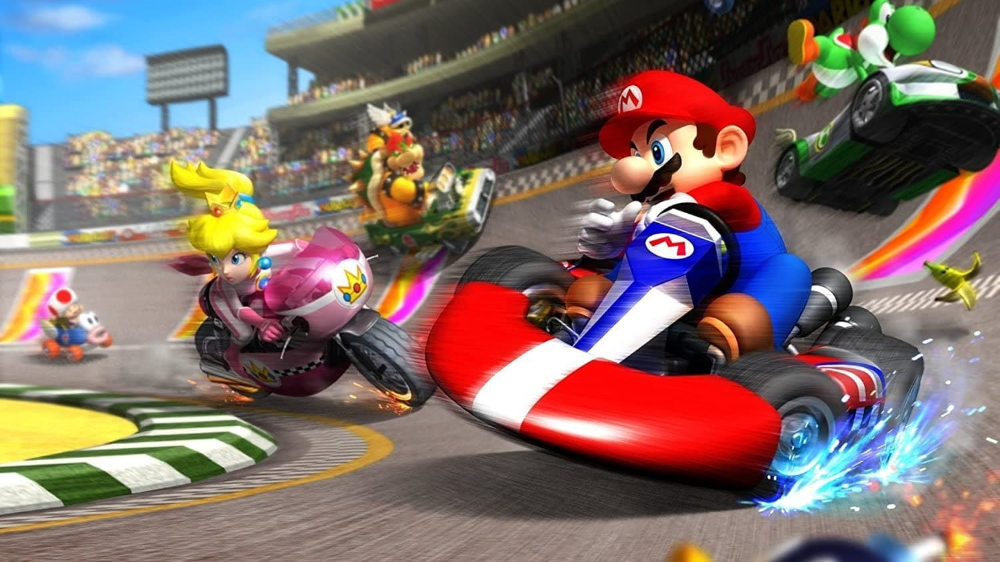
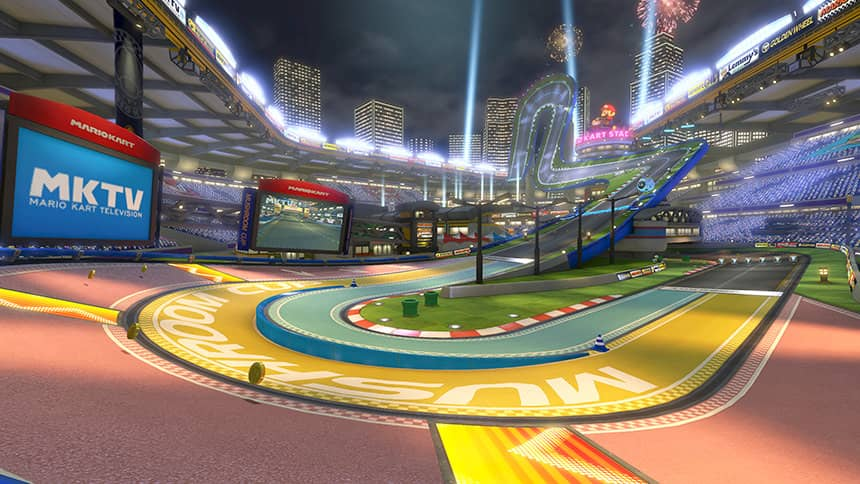

Mario Kart 8: La Carrera Definitiva en la Consola
Mario Kart™ 8 Deluxe
Mario Kart 8 es uno de los juegos más populares y emocionantes de la franquicia de Nintendo. Con nuevas pistas, vehículos y un impresionante modo multijugador, este título ha revolucionado la forma de jugar carreras. Ya sea compitiendo contra amigos o desafiando a la IA, cada carrera es una experiencia única.
En Mario Kart 8, los jugadores pueden disfrutar de una amplia variedad de personajes y circuitos que combinan lo mejor de la jugabilidad clásica con innovadoras mecánicas de juego. El regreso de las carreras antigravedad y los nuevos power-ups agregan una capa adicional de emoción a cada vuelta. Además, la calidad gráfica y el diseño de las pistas hacen de este juego una verdadera obra maestra visual.
Este juego ofrece una experiencia para todos, desde principiantes hasta expertos. Las partidas multijugador online y local permiten que amigos y familiares se enfrenten en intensas carreras llenas de diversión. Si eres fanático de los juegos de carreras o simplemente buscas un título divertido y accesible, Mario Kart 8 es la elección perfecta para ti.
Mario Kart™ 8 Deluxe
El proyecto de *Mario Kart 8 Deluxe* comenzó como una extensión del exitoso *Mario Kart 8* lanzado originalmente para la consola Wii U. Después de la recepción positiva del juego en la Wii U, el equipo de Nintendo decidió adaptarlo para la Nintendo Switch, con mejoras significativas en el rendimiento y la jugabilidad. La idea era aprovechar el hardware de la nueva consola para ofrecer una experiencia aún más fluida y visualmente impresionante, a la vez que se mantenían los elementos que hicieron popular al título original.
El desarrollo de *Mario Kart 8 Deluxe* estuvo fuertemente influenciado por la necesidad de ampliar la accesibilidad y atraer tanto a jugadores nuevos como a los fanáticos de la saga. Para ello, Nintendo decidió incluir todos los contenidos adicionales del juego original, así como nuevas características como el modo multijugador local mejorado, una mayor cantidad de personajes y vehículos, y un sistema de control más flexible. El objetivo era ofrecer la experiencia más completa posible para los jugadores de todas las edades y niveles de habilidad.
A lo largo de su desarrollo, el equipo de Nintendo se centró en optimizar el juego para que pudiera ejecutarse perfectamente en la Nintendo Switch, aprovechando su capacidad de juego en modo portátil y en consola. Además, se puso un énfasis especial en la experiencia de juego en línea, permitiendo a los jugadores competir entre sí a través de la conectividad de la nueva consola. El proyecto de *Mario Kart 8 Deluxe* se consolidó como uno de los títulos más importantes del catálogo de la Nintendo Switch, impulsando el éxito de la consola desde su lanzamiento en 2017.